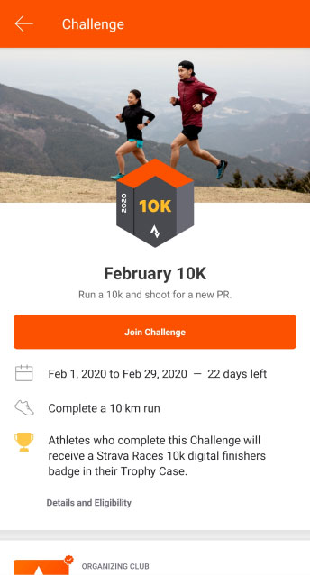
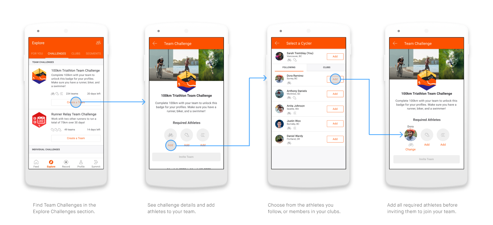

Strava Team Challenges
3 week app feature case as a part of the the course IAT334 Interface Design provided by School of Interactive Arts & Technology at Simon Fraser University in Vancouver, BC.
App feature design case
Android
January 2020- February 2020
User Research, UX Evaluation & UI Design
Jenny Ho & Jessi Li
Figma, Adobe Photoshop, Adobe Illustrator
Feature Teardown, Wireframing, Personas, etc.
Background
Strava is a social fitness app that allows fitness enthusiasts to track their exercise progress and share fitness activities with friends. Users can use Strava to join clubs, complete challenges, find local events, compare and share their activity with other users in their fitness network.
Discover
The research was focused on understanding how the users use the app and why they choose it in favor of other apps to find its unique selling points. Semi-structured interviews was carried out with individuals who have regular fitness routines. The questions focused on asking individuals about their fitness routines and exercise motivations/behaviours. Many Strava users are attracted to the social platform that differs from its competitors.
Define
Strava brings athletes closer by sharing workout activities. However, most activities and challenges are completed individually, with social involvement only after you share a post or activity. Some athletes are motivated by knowing and seeing other people participating in the same activities, and through social feedback such as likes and comment on their activities. Many athletes want to keep track of their personal progress. Some share their progress with their friends to receive social motivation, while others track it for personal motivation.
Develop
Inside Strava users can set goals and challenge each other on different challenges. Our work continued with ideation on how a new feature could benefit from the social platform to make the social interactions in the app even more attractive. Many features in the app that include interactions between users are competitive between the users.
Deliver
We wanted our feature to improve the social experience of the app and. Our final concept leveraged on the social platform and allowed the users work together instead of competing against each other. We call the feature Team Challenges. Users can group up and pick a fitting challenge to work on together.

Challanges
We leveraged the existing Challenges feature as an opportunity to create a collaborative team-based activity and encourage users to utilize the social interactions in Strava.
Strava Team Challanges
Team Challenges allow users to motivate each other in reaching a common goal. Users can create custom teams, see activity from their teammates, and send encouragement to help motivate each other.

Scalability & Feasibility
The components of the design are easily scaled and modified based on desired user experience: types of activities in challenge, number of team members, cheers UI, etc.
The feature is feasible because we By leveraging mostly on existing interaction and UI patterns. Developing this feature will therefore require less resources such as manpower and money.